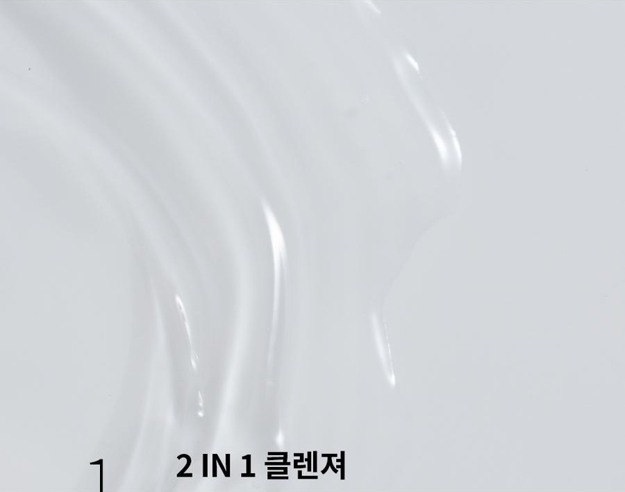
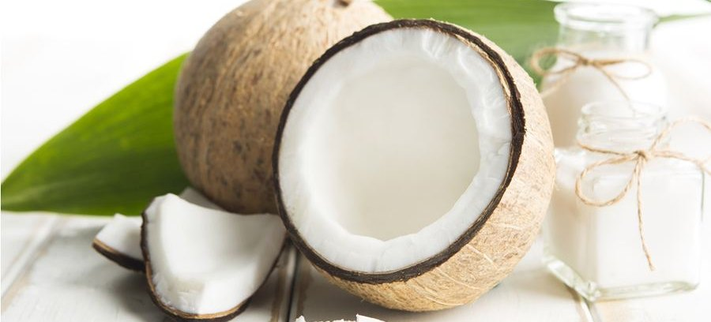
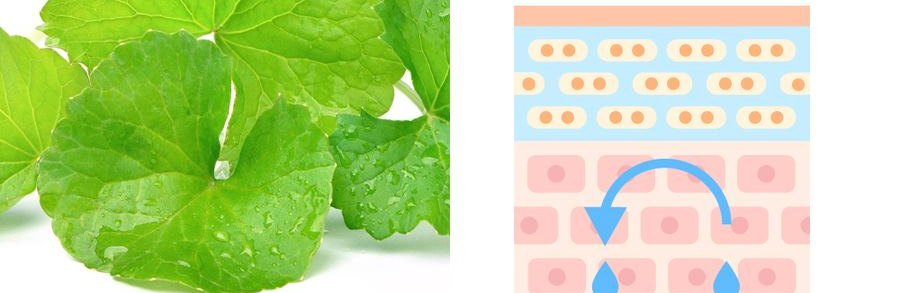
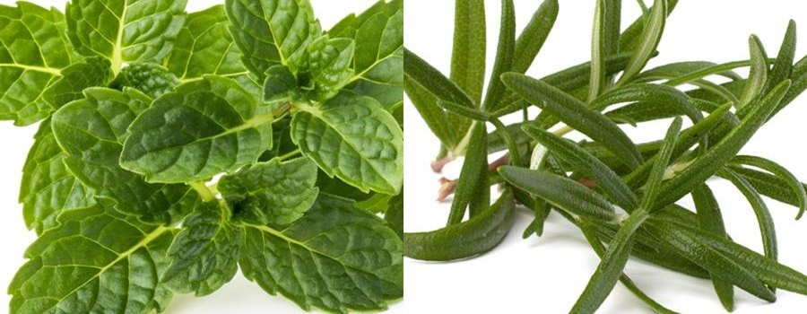

COCODEMER Clair Blanc Cleansing Water
| Volume | 210ml |
|---|---|
| Suitable for | All skin types |
| Key technology | L-CODEMAR ELIXIR™ |
| Manufacturer · Responsible distributor | JUNGCOS CO., LTD. / COCODEMER CO., LTD. |
This product is not yet listed on the Smart Store. For purchases, please use the store, or contact us through the B2B inquiry.
COCODEMER Clair Blanc Cleansing Water
A gentle, deeply hydrating cleansing water with a fresh finish
A one-step cleansing water that combines a thorough cleanse with skincare benefits
Mild cleansing agents and skin-friendly botanicals lift away impurities and make-up gently and thoroughly, with minimal irritation.
A light water texture hydrates without stickiness and helps soothe the skin. After cleansing, skin feels moist rather than tight, and the finish is fresh, with nothing left behind.
Naturally derived oil from the coconut palm removes make-up simply and cleanly.

A one-step water formula that needs no rinsing. It removes eye, lip and face make-up thoroughly, without irritating the skin.
A mild coconut-derived surfactant cleanses with little irritation and leaves a veil of moisture behind, so skin feels richly hydrated afterwards.
Built on a base of Cocos Nucifera (Coconut) Water, with botanicals including Apple Mint Leaf Extract, Sage Leaf Extract, Rosemary Leaf Extract and Peppermint Leaf Extract, it is outstanding at soothing the skin.
Key Active Code

43% naturally derived cleansing agents from coconut oil help build a dense, generous lather. It lifts away make-up residue and impurities from deep in the pores without irritating the skin.

Water-soluble moisturising ingredients form a protective veil of moisture even after deep cleansing, helping to soothe skin that has turned sensitive.

Botanicals that bring vitality to the skin help tighten pores after a deep cleanse.
* The above describes the ingredients, not the finished product.
See the ingredient reference →
L-CODEMAR ELIXIR™
COCODEMER's proprietary technology.
Our multi-layer nano-gel emulsion encapsulation technology holds the core actives — coconut water, phytosterols, 20 amino acids and honey extract — in a stable complex. That complex is then built into a skin-friendly liposomal form that mirrors the structure of skin itself, for the most efficient delivery into the skin.
L-Codemar Elixir™ strengthens the bonds between skin cells. It restores a damaged barrier and forms a strong protective film, so hydration holds for longer.


How To Use
- Soak a cotton pad thoroughly with the product.
- Working across the forehead, then the cheeks and chin, wipe from the centre outwards, following the grain of the skin.
A one-step cleansing water that combines a thorough cleanse with skincare benefits
Mild cleansing agents and skin-friendly botanicals lift away impurities and make-up gently and thoroughly, with minimal irritation.
A light water texture hydrates without stickiness and helps soothe the skin. After cleansing, skin feels moist rather than tight, and the finish is fresh, with nothing left behind.
Naturally derived oil from the coconut palm removes make-up simply and cleanly.
A one-step water formula that needs no rinsing. It removes eye, lip and face make-up thoroughly, without irritating the skin.
A mild coconut-derived surfactant cleanses with little irritation and leaves a veil of moisture behind, so skin feels richly hydrated afterwards.
Built on a base of Cocos Nucifera (Coconut) Water, with botanicals including Apple Mint Leaf Extract, Sage Leaf Extract, Rosemary Leaf Extract and Peppermint Leaf Extract, it is outstanding at soothing the skin.
43% naturally derived cleansing agents from coconut oil help build a dense, generous lather. It lifts away make-up residue and impurities from deep in the pores without irritating the skin.
Water-soluble moisturising ingredients form a protective veil of moisture even after deep cleansing, helping to soothe skin that has turned sensitive.
Botanicals that bring vitality to the skin help tighten pores after a deep cleanse.
* The above describes the ingredients, not the finished product.
L-CODEMAR ELIXIR™
COCODEMER's proprietary technology. Our multi-layer nano-gel emulsion encapsulation technology holds the core actives — coconut water, phytosterols, 20 amino acids and honey extract — in a stable complex. That complex is then built into a skin-friendly liposomal form that mirrors the structure of skin itself, for the most efficient delivery into the skin. L-Codemar Elixir™ strengthens the bonds between skin cells. It restores a damaged barrier and forms a strong protective film, so hydration holds for longer.
①Soak a cotton pad thoroughly with the product. ②Working across the forehead, then the cheeks and chin, wipe from the centre outwards, following the grain of the skin.
| Net volume or weight | 210ml |
|---|---|
| Suitable for | All skin types |
| Shelf life / period after opening | 30 months from date of manufacture; use within 12 months of opening |
| How to use | Saturate a cotton pad with the product, then sweep it from the inside outwards, following the natural grain of the skin, over the forehead, cheeks and chin in turn. |
| Cosmetics manufacturer | JUNGCOS CO., LTD. |
| Responsible distributor | COCODEMER CO., LTD. |
| Country of origin | Republic of Korea |
| Full ingredients (INCI) | Cocos Nucifera (Coconut) Water, Butylene Glycol, PEG-6 Caprylic/Capric Glycerides, 1,2-Hexanediol, Centella Asiatica Extract, Ficus Carica (Fig) Fruit Extract, Honey Extract, Mentha Piperita (Peppermint) Leaf Extract, Mentha Suaveolens (Apple Mint) Leaf Extract, Rosmarinus Officinalis (Rosemary) Leaf Extract, Salvia Officinalis (Sage) Leaf Extract, Hydrogenated Lecithin, 2,3-Butanediol, Alanine, Arginine, Aspartic Acid, Carnitine, Ceramide NP, Citric Acid, Citrulline, Disodium EDTA, Ethylhexylglycerin, Glutamic Acid, Glutamine, Glycerin, Glycine, Isoleucine, Leucine, Methionine, Ornithine, Phenylalanine, Phytosterols, Proline, Serine, Sodium Citrate, Threonine, Tryptophan, Tyrosine, Valine, Water, Fragrance (Parfum) |
| Functional cosmetic approval | Not applicable |
| Precautions | 1. If the treated area shows red spots, swelling, itching or other abnormal reactions during or after use, or following exposure to direct sunlight, consult a specialist. 2. Avoid use on broken or wounded skin. 3. Storage and handling a) Keep out of reach of children. b) Store away from direct sunlight. |
| Quality guarantee | In the event of a defect, compensation is provided in accordance with the Consumer Dispute Resolution Standards published by the Korea Fair Trade Commission. |
| Customer enquiries | 010-3307-9341 / cocodemer@cocodemer.co.kr |
* Required disclosure under Korean cosmetics labelling and advertising rules. This is a reference translation; for the certified ingredient declaration, CPSR or CoA, please contact us through the B2B enquiry.